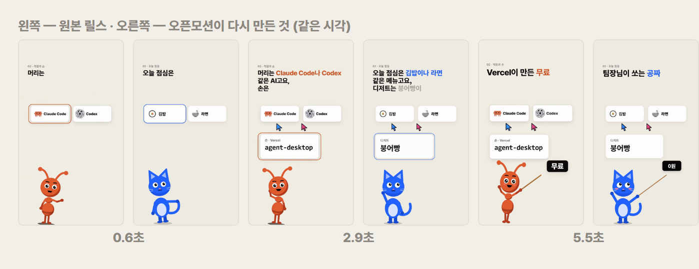
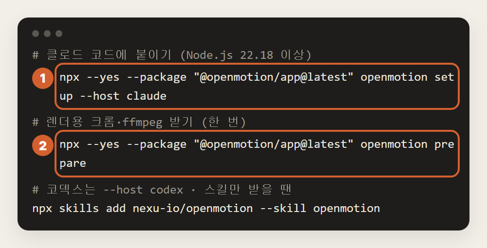
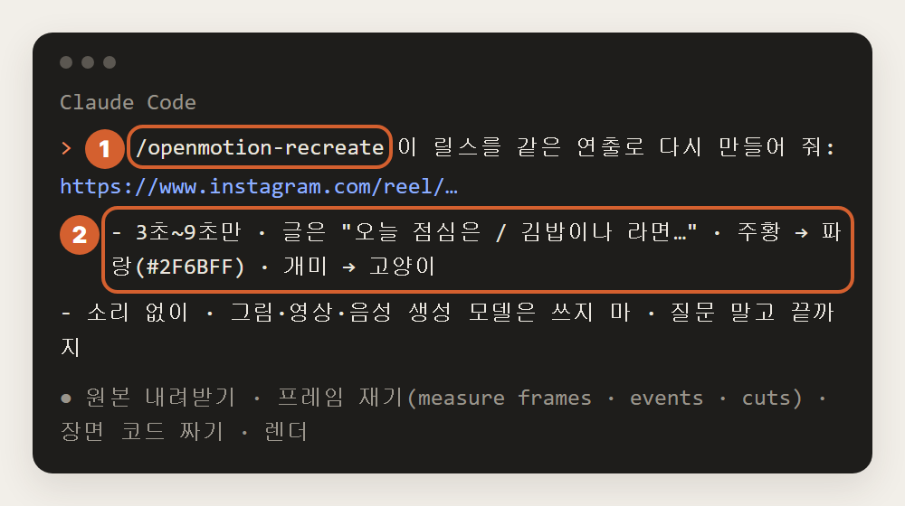
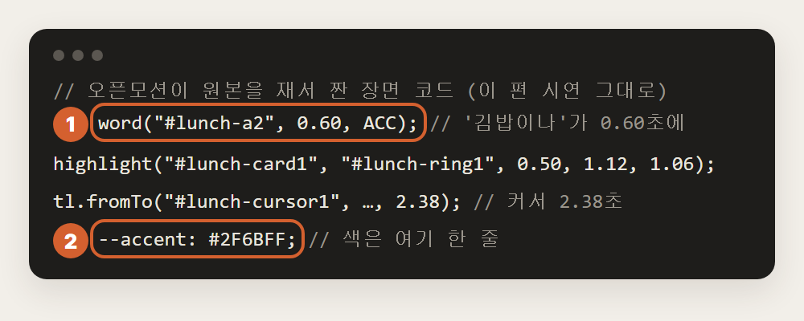
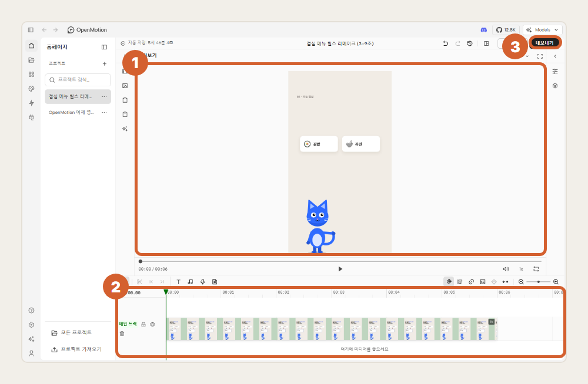

참고할 릴스 링크(또는 영상 파일)를 주면, 클로드 코드·코덱스가 원본을 장면마다 재서 글자 뜨는 시각·카드 움직임·전환을 그대로 코드로 다시 짜고, 글자·색·캐릭터만 내 것으로 바꾼 MP4를 뽑아 줘요. 다 만든 뒤엔 편집 화면(Studio)에서 타임라인을 보며 더 고칠 수 있어요. 깃허브 공개 오픈소스(Apache-2.0)라 프로그램은 무료예요.

터미널(윈도는 PowerShell)에서 1번으로 클로드 코드에 오픈모션 스킬과 도구를 붙이고, 2번으로 렌더에 쓸 크롬·ffmpeg를 한 번 받아요. 그다음 클로드 코드를 새로 켜요. 코덱스는 1번 끝을 --host codex로 바꿔요.

/openmotion-recreate 뒤에 참고할 릴스 링크를 붙이고(1), 몇 초 구간인지와 바꿀 글·색·캐릭터를 적어요(2). '생성 모델은 쓰지 마'를 적으면 전부 코드로 만들어서 모델 비용이 0원이에요. 질문 말고 끝까지 가라고 적어 두면 중간에 안 멈춰요.

이 편에서 실제로 돌린 결과예요. 6초 구간을 18분쯤에 다시 만들었고, 카드가 켜지는 박자·커서 자리·캐릭터가 막대를 드는 순간까지 원본과 같은 시각에 맞았어요. 글자·색·캐릭터만 바뀌었어요.
오픈모션은 원본 프레임을 재서(measure frames·events·cuts) 낱말이 뜨는 시각, 카드가 켜지는 시각을 숫자로 뽑고, 그 숫자 그대로 장면 코드(HTML·GSAP)를 짜요(1). 색은 변수 한 줄이라 바꾸기 쉬워요(2).

클로드에게 '편집 화면 열어 줘'라고 하면 브라우저에 Studio가 떠요. 미리보기(1)와 타임라인(2)을 보면서 손으로 고치거나 '3초에 붕어빵을 호떡으로'처럼 말로 시키고, 내보내기(3)로 MP4를 받아요.

처음 한 번
npx --yes --package "@openmotion/app@latest" openmotion setup --host claude
설치 다음 한 번
npx --yes --package "@openmotion/app@latest" openmotion prepare
참고 영상이 있을 때
/openmotion-recreate 이 릴스를 같은 연출로 다시 만들어 줘: <링크> - 0초~6초만. 장면 순서·움직임·글자 타이밍은 원본 그대로 - 글은 "<내 문장>"으로, 강조색은 <색>으로 - 그림·영상·음성 생성 모델은 쓰지 마. 질문하지 말고 끝까지 가
참고 영상이 없을 때
오픈모션 견본 목록 보여 주고, 제품 소개에 맞는 걸 하나 골라서 내 글로 바꿔 줘
도움이 되셨다면
@ai.antenna.kr
에서 바로 쓰는 AI 활용법을 계속 올립니다.